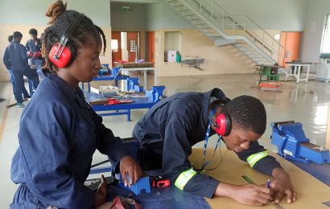

|  |
School of Science & Technology
The School of Science and Technology (SST) is a community of people committed to creating and transmitting knowledge and competencies in science, engineering and technology by “forming competent and socially responsible science and engineering professionals who are committed to the promotion of the common good of society and the advancement of the scientific and engineering profession”.
SST contributes to national development through the provision of academic programmes that are relevant to the needs of the industry. We are open to all people regardless of their nationality, race, sex, religion or ethnic group. The curricular activities of SST are part of a wider all round formation which is provided in the University. |